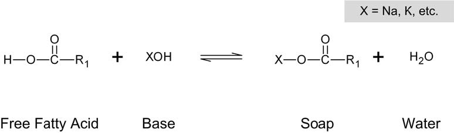
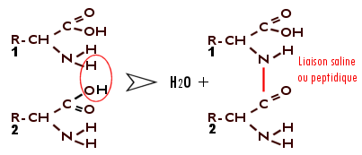

Réactions explorables avec l’AR de ce projet:
Réaction de saponification entre un acide gras et la potasse:
La réaction de saponification est une réaction chimique qui transforme un ester carboxylique (groupement de la forme R-COO-R’), ou un acide carboxylique (R’ est remplacé par un groupement hydroxyle) en un ion carboxylate et un alcool si la molécule de départ était un ester sinon une molécule d’eau si c'était un acide carboxylique. Pour permettre la transformation, l’ester ou l’acide carboxylique doivent réagir avec une base forte, comme par exemple la potasse KOH, qui en milieu aqueux se dissocie en K+ et OH-.
Le OH- libre dans l’eau sera donc capable de faire un attaque nucléophile sur le groupement R’ de l’ester ou le proton H du groupement carboxyle de l’acide gras.


La saponification est une réaction plutôt lente (cinétique d’ordre 2) mais elle se produit à température ambiante. C’est une réaction totale donc les réactifs (l’acide gras et la base) sont complètement consommés à la fin de la réaction et il s’agit d’une réaction exothermique (elle dégage de l'énergie thermique).
La réaction de saponification peut être bien plus complexe que cela car elle peut se produire sur les esters d’acides gras des triglycérides.
Cette réaction s’appelle réaction de saponification car le sel d’acide gras obtenu à fin réaction est plus communément appelé savon, et c’est pour cela qu'elle est amplement utilisée dans l’industrie chimique dans la production de produits pour l'hygiène.
Apprenez-en plus sur Wikipedia.
Formation de la liaison peptidique:
La formation de liaisons peptidiques est une réaction biochimique très importante pour la vie car il s’agit de la réaction qui permet d'enchainer et relier les acides aminés qui constituent les protéines.
La réaction qui mène à la formation de la liaison peptidique est une réaction de condensation entre un groupement carboxylique -COOH et un groupement amine -NH2 avec la libération d’une molécule d’eau.


La réaction mène à la formation d’une amide substituée où la résonance entre la liaison C=O et le doublet non liant de l’azote fait que la liaison peptidique soit un mélange entre une liaison simple et une liaison double.
Apprenez-en plus sur Wikipedia.
Formation de la liaison ester:
La formation de liaison ester aussi appelée estérification consiste en la condensation d’un groupement acide carboxylique ( ou un dérivé ) avec un groupement alcool pour aboutir à un ester et un résidu (le résidu étant une molécule d’eau pour un acide carboxylique).
Cette réaction est une réaction lente.


Cette réaction donne lieu à la formation d'une amine substituée au lieu de la raisonnance entre la liaison double C=O et le doublet non liant de l'azote. Le produit final est ... le savon !
Apprenez-en plus sur Wikipedia.
Reactions to explore with this project:
Saponification reaction between a fatty acid and potash:
Saponification reaction is a chemical reaction that transform a carboxylic ester (R-COO-R’ form) or a carboxylic acid (if R’ is replaced by OH) into a carboxylate ion and an alcohol (or water if R’ was a OH).To allow the transformation, the ester/carboxylic acid must react with a strong base like potash KOH, which dissolves in K+ and OH- in water. The free OH- will do a nucleophile attack on the R’ of the ester or H of the carboxylic group of the fatty acid.


Saponification has a cinetic order of 2 and can happen at ambient temperature. The reaction is total and exothermic. It also can be much more complex due to it happening with fatty acid esters of triglycerides.
Learn more about it on Wikipedia.
Formation of the peptidic bond:
The formation of peptidic bonds is a very important biochemical reaction for life as it chains amino acids to build proteins. More precisely it is the condensation of a carboxylic group (-COOH) and an amine group (-NH2), and it frees a water molecule.


That reaction leads to the formation of an amino substituted where the resonance between the C=O bond and the non-binding doublet is balanced between simple and double bond. The final product is ... soap !
Learn more about it on Wikipedia .
Ester bond formation:
The formation of the ester bond, also called esterification consists in the condensation of a carboxylic acid group (or similar) with an alcohol group to give rise to the ester and a residue (water in case of a carboxylic).

That reaction leads to the formation of an amino substituted where the resonance between the C=O bond and the non-binding doublet is balanced between simple and double bond.
Learn more about it on Wikipedia .
Reazioni disponibili con la realtà aumentata
di questo progetto:
Razione di saponificazione fra un acido grasso e l'idrossido di potassio:
La reazione di saponificazione è una reazione chimica che trasforma un estere carbossilico (gruppo chimico della forma R-COO-R'), o un acido carbossilico (con un -OH al posto di R') in un ione carbossilato e un alcool (se la molecola di partenza era un estere) o in una molecola d'acqua (se era un acido carbossilico).
Per permettere la trasformazione, l'estere o l'acido carbossilico devono reagire con una base forte, come per esempio l'idrossido di potassio (KOH), che in acqua si dissocia in K+ e OH-. L'OH- libero può quindi effettuare un attacco nucleofilo su R' (per l'estere) o sull'idrogeno (per l'acido carbossilico).

La saponificazione è una reazione piuttosto lenta (reazione di ordine 2) ma che si produce però a temperatura ambiente. La reazione è totale quindi i reagenti (l'acido grasso e la base) sono completamente consumati alla fine e si tratta di una reazione esotermica (libera dell'energia termica).
La reazione di saponificazione può essere ben più complessa di cosi perché può effettuarsi su gli estere di acifi grassi dei trigliceridi.
La reazione piglia il nome di saponificazione perché il sale d'acido grasso ottenuto è più comunemente chiamato sapone, e per questa ragione è ampiamente utilizzata nell'industria chimica nella produzione di prodotti per l'igigene.
Per saperne di più su Wikipedia.
Formazione del legame peptidico:
La formazione dei legami peptidici è una reazione biochimica molto importante per la vita perché si tratta della reazione che permette di legare gli amminoacidi gli uni agli altri per formare in seguito le proteine.
Da un punto di vista puramente chimico, si tratta di una reazione di condensazione, tra il gruppo carbossilico -COOH di un amminoacido e il gruppo -NH2 di un altro amminoacido, che libera quindi una molecola d'acqua.
Per saperne di più su Wikipedia.

La reazione forma quello che viene chiamato ammide sostituta,dove la resonanza fra il legame C=O e il doppietto elettronico non condiviso dell'azoto fa che il legame peptidico sia in realtà un misto fra legame semplice e doppio.
Per saperne di più su Wikipedia.
Processo di esterificazione:
L'esterificazione consiste nella condensazione di un acido carbossilico (o di un suo derivato) e di un alcol in un estere e un residuo (una molecola d'acqua per gli acidi carbossilici). Il prodotto finale è ... il sapone
La reazione è una reazione lenta.

Per saperne di più su Wikipedia.